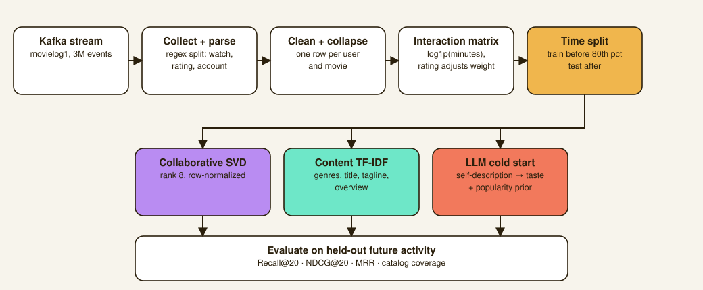

Movie Recommender on Kafka Streams
A recommendation system built entirely on a live Kafka event stream, comparing collaborative and content-based filtering, plus an LLM-based cold-start path for users with no watch history at all.
Overview
The assignment: build a movie recommender for a streaming service that publishes user activity as a live Kafka stream, movielog1, rather than handing you a static dataset. That meant the whole project started with a data engineering problem before any modeling could happen: connect to the stream, parse it, clean it, and turn raw watch events into something a model could learn from.

Data pipeline
I collected 3,000,000 events from the stream over an SSH tunnel to the course's Kafka broker: 2,981,443 watch events and 18,557 ratings, spanning about six weeks and covering 1,968 users across 4,043 movies. A separate metadata script fetched genre, title, and synopsis data for every movie and user that appeared, batching requests at the API's documented limit and resuming cleanly if a fetch got interrupted.
Cleaning happens in two passes. Malformed lines get dropped at parse time (wrong field count, non-numeric user ids, out-of-range ratings), and a second pass drops rows with missing ids, malformed movie identifiers, or unparseable timestamps. Nothing gets repaired, only dropped, since silently patching bad data tends to hide the actual failure modes.
The stream emits one row per watched minute, far too granular to model directly, so I collapsed it to one row per (user, movie): distinct minutes watched, first and last timestamps, and the latest rating. A rating of 7 or above multiplies the interaction strength by 1.5, and 4 or below multiplies it by 0.15, so someone who sat through a movie and rated it 2/10 doesn't get treated as a positive signal the way a raw watch-count model would. After filtering users and movies with fewer than 5 interactions, 20,699 interactions remained across 1,641 users and 1,204 movies, split by time rather than randomly, everything before the 80th-percentile timestamp trains, everything after tests, so the evaluation can't leak the future into training.
Two approaches
Collaborative filtering factors the sparse user-by-movie interaction matrix with a truncated SVD after row-normalizing so heavy bingers don't dominate. I used truncated SVD instead of ALS because scipy's randomized SVD is vectorized, retrains in seconds, and needed no extra dependency. Rank mattered more than anything else I tuned: an early attempt at rank 64 actually lost to a plain popularity baseline, because the data is sparse enough (about 10 interactions per user in the training window) that higher ranks overfit badly. Rank 8 won on the validation split and became the default.
Content-based filtering represents each movie as a TF-IDF vector over its genres, title, tagline, and overview, with genres repeated three times so they outweigh plot prose, and scores a user by cosine similarity to their watch history.
Results
I reported catalog coverage alongside accuracy, because a model that scores well by recommending the same 30 titles to everyone is a business problem, not a good recommender.
The collaborative model is what I'd deploy. It beats the popularity baseline by 59% on both Recall@20 and NDCG@20, and spreads recommendations across 4.4 times more of the catalog than popularity alone. The content-based model actually lands below the popularity baseline on accuracy, which is a real result rather than a bug: it ranks purely on metadata similarity, so it happily surfaces obscure titles that resemble what a user watched, which shows up as its high 0.804 coverage, while real viewing behavior stays concentrated on well-known films. Its value is structural, it can recommend something nobody has watched yet, which the collaborative model can never do.
LLM cold start
New users have no watch history for either model to work with, so I built a third path: an LLM reads a user's free-text self-description of what they like and don't like, and turns it into a ranking. Simulated on 40 held-out users, the LLM path scored Recall@20 of 0.1084 against 0.0190 for dropping the same text straight into TF-IDF, roughly six times better. That gap makes sense once you read what people actually write: real users write things like "I no like childish films, like Casper," naming specific films and stating preferences negatively, which bag-of-words retrieval simply can't represent.
A popularity prior turned out to be essential, not optional. Ranking on taste match alone scored Recall@20 of just 0.030 on tuning users, blending in a popularity prior raised it to 0.112. I also caught a bug where a user's explicitly disliked genre could still surface if the movie was popular enough, since the dislike penalty was being weighed against the content score alone rather than the combined score. Fixing that cost a little raw recall but pushed genre match to 0.909 against 0.769 and hit rate to 0.750 against 0.650. I'd rather the system visibly respect what someone said they don't want than win on aggregate recall by recommending them another blockbuster in a genre they just told it to avoid.